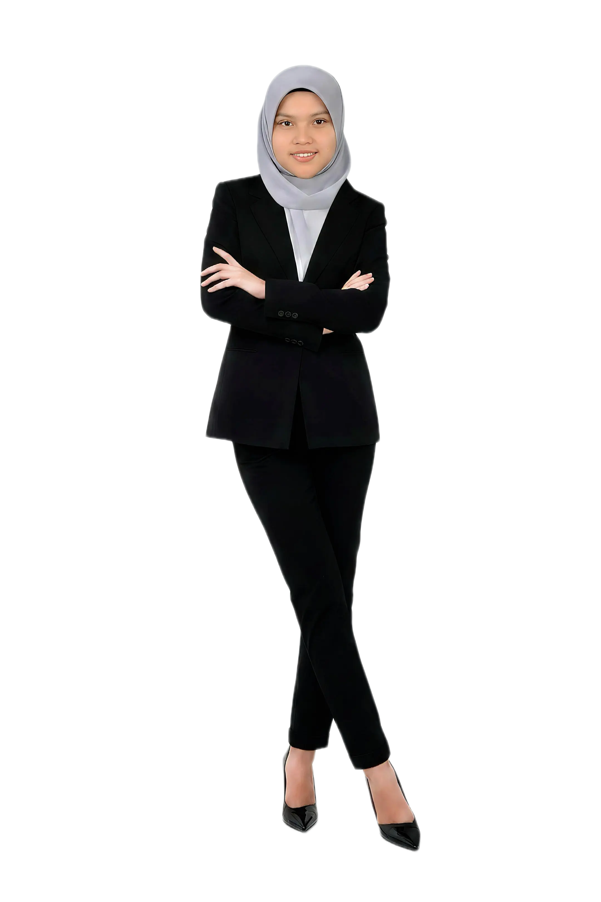

ABOUT
ME

SITI
ZULAIHA
AZHAR
ZULAIHA
AZHAR
Where Technology Meets
Creative Design
Who Am I?
Hi, I am Siti Zulaiha Azhar, a student at Universiti Sultan Zainal Abidin (UniSZA) currently pursuing my Bachelor of Information Technology (Informatics Media) with Honours. My journey is defined by the intersection of logic and art; I believe that software development is most powerful when it is paired with compelling visual storytelling. I am highly adaptable and enthusiastic about taking on diverse challenges, as I am always eager to gain new professional experiences and thrive in collaborative team environments.